Economics is about you. It is about how you make choices. It is about how you interact with other people. It is about the work you do and how you spend your leisure time. It is about the money you have in your pocket and how you choose to spend it. Because economics is about your choices plus everyone else’s, this is where we begin. As far as your own life is concerned, you are the most important economic decision maker of all. So we begin with questions you answer every day:
Economists don’t presume to tell you what you should do with your time and money. Rather, studying economics can help you better understand your own choices and make better decisions as a consequence. Economics provides guidelines about how to make smart choices. Our goal is that after you understand the material in this chapter, you will think differently about your everyday decisions.
Decisions about spending money and time have a key feature in common: scarcity. You have more or less unlimited desires for things you might buy and ways that you might spend your time. But the time and the money available to you are limited. You don’t have enough money to buy everything you would like to own, and you don’t have enough time to do everything you would like to do.
Because both time and money are scarce, whenever you want more of one thing, you must accept that you will have less of something else. If you buy another game for your Xbox, then you can’t spend that money on chocolate bars or movies. If you spend an hour playing that game, then that hour cannot be spent studying or sleeping. Scarcity tells us that everything has a cost. The study of decision making in this chapter is built around this tension. Resources such as time and money are limited even though desires are essentially limitless.
We tackle the two questions of this chapter in turn, but you will see that there are close parallels between them. We begin by looking at spending decisions. Although we have said that money is scarce, a more precise statement is that you have limited income. (Economists usually use the term “money” more specifically to mean the assets, such as currency in your wallet or funds in your checking account, that you use to buy things.) Because your income is limited, your spending opportunities are also limited. We show how to use the prices of goods and services, together with your income, to analyze what spending decisions are possible for you. Then we think about what people’s wants and desires look like. Finally, we put these ideas together and uncover some principles about how to make choices that will best satisfy these desires.
Your decisions about what to buy therefore depend on how much income you have and the prices of goods and services. Economics summarizes these decisions in a simple way by using the concept of demand. We show how demand arises from the choices you make. Demand is one of the most useful ideas in economics and lies at the heart of almost everything we study in this book.
Finally, we turn to the decision about how to spend your time. Again, we begin with the idea that your resources are limited: there are only so many hours in a day. As with the spending decision, you have preferences about how to spend your time. We explain the principles of good decision making in this setting. Based on this analysis, we introduce another central economic idea—that of supply.
Economics is both prescriptive and descriptive. Economics is prescriptive because it tells you some rules for making good decisions. Economics is descriptive because it helps us explain the world in which we live. As well as uncovering some principles of good decision making, we discuss whether these are also useful descriptions of how people actually behave in the real world.
We start with the decision about how to spend your income. We want to know what possibilities are available to you, given that your income is limited but your desires are not.
We describe your personal decision making on a month-by-month basis (although we could equally well look at daily, weekly, or even annual decisions because the same basic ideas would apply). Suppose you receive a certain amount of income each month—perhaps from a job or a student grant. The government takes away some of this income in the form of taxes, and the remainder is available for you to spend. We call the income that remains after taxes your disposable incomeIncome after taxes are paid to the government..
You may want to put aside some of this income for the future; this is your savings. The remainder is your consumption, which is your spending on all the goods and services you buy this month: rent, food, meals out, movies, cups of coffee, CDs, music downloads, DVD rentals, chocolate bars, books, bus rides, haircuts, and so on. Figure 4.1 "What You Do with Your Income" shows this process.
Figure 4.1 What You Do with Your Income
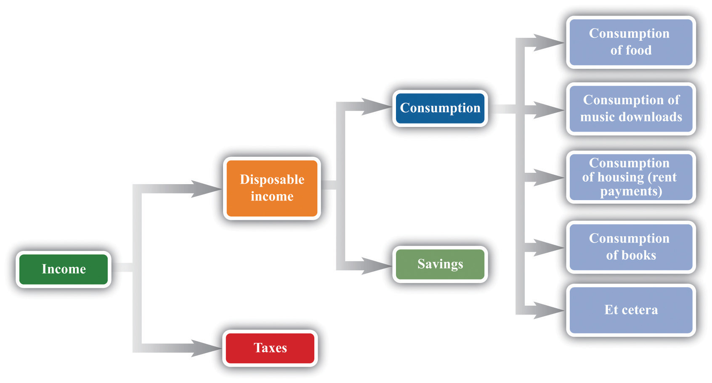Here is a schematic view of what happens to your income.
This view of your paycheck involves several economic decisions. Some of these are decisions made by the government. Through its tax policies, the government decides how much of your income it takes from you and how much is left as disposable income. You make other decisions when you allocate your disposable income among goods and services today and in the future. You choose how to divide your disposable income between consumption this month and saving for the future. You also decide exactly how much of each good and service you purchase this month. We summarize your ability to purchase goods and services by your budget setAll the possible combinations of goods and services that are affordable, given income and the prices of all goods and services..
Toolkit: Section 31.1 "Individual Demand"
The budget set is a list of all the possible combinations of goods and services that are affordable, given both income and the prices of all goods and services. It is defined by
total spending ≤ disposable income.Begin by supposing you neither save nor borrow. We can construct your budget set in three steps.
Look at spending on each good and service in turn. For example, your monthly spending on cups of coffee is as follows:
spending on coffee = number of cups purchased × price per cup.A similar equation applies to every other good and service that you buy. Your spending on music downloads equals the number of downloads times the price per download, your spending on potato chips equals the number of bags you buy times the price per bag, and so on.
Now add together all your spending to obtain your total spending:
total spending = spending on coffee + spending on downloads + … ,where … means including the spending on every different good and service that you buy.
Observe that your total spending cannot exceed your income after taxes:
total spending ≤ disposable income.You are consuming within your budget set when this condition is satisfied.
In principle, your list of expenditures includes every good and service you could ever imagine purchasing, even though there are many goods and services you never actually buy. After all, your spending on Ferraris every month equals the number of Ferraris that you purchase times the price per Ferrari. If you buy 0 Ferraris, then your spending on Ferraris is also $0, so your total spending does include all the money you spend on Ferraris.
Imagine now that we take some bundle of products. Bundle here refers to any collection of goods and services—think of it as being like a grocery cart full of goods. The bundle might contain 20 cups of coffee, 5 music downloads, 3 bags of potato chips, 6 hours of parking, and so on. If you can afford to buy this bundle, given your income, then it is in the budget set. Otherwise, it is not.
The budget set, in other words, is a list of all the possible collections of goods and services that you can afford, taking as given both your income and the prices of the goods and services you might want to purchase. It would be very tedious to write out the complete list of such bundles, but fortunately this is unnecessary. We merely need to check whether any given bundle is affordable or not. We are using affordable not in the casual everyday sense of “cheap” but in a precise sense: a bundle is affordable if you have enough income to buy it.
It is easiest to understand the budget set by working though an example. To keep things really simple, suppose there are only two products: chocolate bars and music downloads. An example with two goods is easy to understand and draw, but everything we learn from this example can be extended to any number of goods and services.
Suppose your disposable income is $100. Imagine that the price of a music download is $1, while the price of a chocolate bar is $5. Table 4.1 "Spending on Music Downloads and Chocolate Bars" shows some different bundles that you might purchase. Bundle number 1, in the first row, consists of one download and one chocolate bar. This costs you $6—certainly affordable with your $100 income. Bundle number 2 contains 30 downloads and 10 chocolate bars. For this bundle, your total spending on downloads is $30 (= 30 × $1), and your total spending on chocolate bars is $50 (= 10 × $5), so your overall spending is $80. Again, this bundle is affordable. You can imagine many other combinations that would cost less than $100 in total.
Table 4.1 Spending on Music Downloads and Chocolate Bars
| Bundle | Number of Downloads | Price per Download ($) | Spending on Downloads ($) | Number of Chocolate Bars | Price per Chocolate Bar ($) | Spending on Chocolate Bar ($) | Total Spending ($) |
|---|---|---|---|---|---|---|---|
| 1 | 1 | 1 | 1 | 1 | 5 | 5 | 6 |
| 2 | 30 | 1 | 30 | 10 | 5 | 50 | 80 |
| 3 | 50 | 1 | 50 | 10 | 5 | 50 | 100 |
| 4 | 20 | 1 | 20 | 16 | 5 | 80 | 100 |
| 5 | 65 | 1 | 65 | 7 | 5 | 35 | 100 |
| 6 | 100 | 1 | 100 | 0 | 5 | 0 | 100 |
| 7 | 0 | 1 | 0 | 20 | 5 | 100 | 100 |
| 8 | 50 | 1 | 50 | 11 | 5 | 55 | 105 |
| 9 | 70 | 1 | 70 | 16 | 5 | 80 | 150 |
| 10 | 5,000 | 1 | 5,000 | 2,000 | 5 | 10,000 | 15,000 |
Bundles 3, 4, 5, 6, and 7 are special because they are affordable if you spend all your income. For example, you could buy 50 downloads and 10 chocolate bars (bundle 3). You would spend $50 on music downloads and $50 on chocolate bars, so your total spending would be exactly $100. Bundle 4 consists of 20 downloads and 16 chocolate bars; bundle 5 is 65 downloads and 7 chocolate bars. Again, each bundle costs exactly $100. Bundle 6 shows that, if you chose to buy nothing but downloads, you could purchase 100 of them without exceeding your income, while bundle 7 shows that you could buy 20 chocolate bars if you chose to purchase no downloads. We could find many other combinations that—like those in bundles 3–7—cost exactly $100.
Bundles 8, 9, and 10 are not in the budget set. Bundle 8 is like bundle 3, except with an additional chocolate bar. Because bundle 3 cost $100, bundle 8 costs $105, but it is not affordable with your $100 income. Bundle 9 costs $150. Bundle 10 shows that you cannot afford to buy 5,000 downloads and 2,000 chocolate bars because this would cost $15,000. There is quite literally an infinite number of bundles that you cannot afford to buy.
Figure 4.2 Various Bundles of Chocolate Bars and Downloads
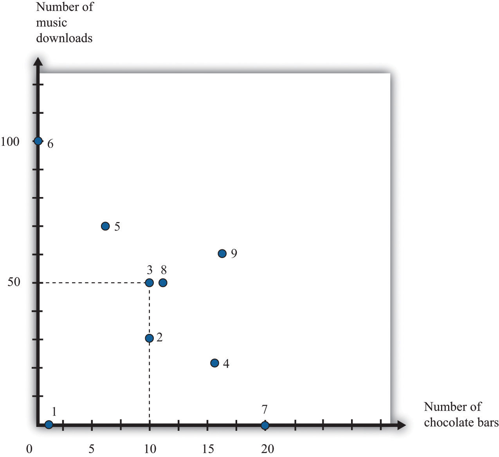This figure shows the combinations of chocolate bars and music downloads from Table 4.1 "Spending on Music Downloads and Chocolate Bars".
Figure 4.2 "Various Bundles of Chocolate Bars and Downloads" illustrates the bundles from Table 4.1 "Spending on Music Downloads and Chocolate Bars". The vertical axis measures the number of music downloads, and the horizontal axis measures the number of chocolate bars. Any point on the graph therefore represents a consumption bundle—a combination of music downloads and chocolate bars. We show the first nine bundles from Table 4.1 "Spending on Music Downloads and Chocolate Bars" in this diagram. (Bundle 10 is several feet off the page.) If you inspect this figure carefully, you may be able to guess for yourself what the budget set looks like. Look in particular at bundles 3, 4, 5, 6, and 7. These are the bundles that are just affordable—that cost exactly $100. It appears as if these bundles all lie on a straight line, which is in fact the case. All the combinations of downloads and chocolate bars that are just affordable represent a straight line.
Meanwhile, the bundles that are affordable with income to spare—like bundles 1 and 2—are below the line, and the bundles you cannot afford—like bundles 8, 9, and 10—are above the line. Building on these discoveries, we find that the budget set is a triangle (Figure 4.3 "The Budget Set").
Figure 4.3 The Budget Set
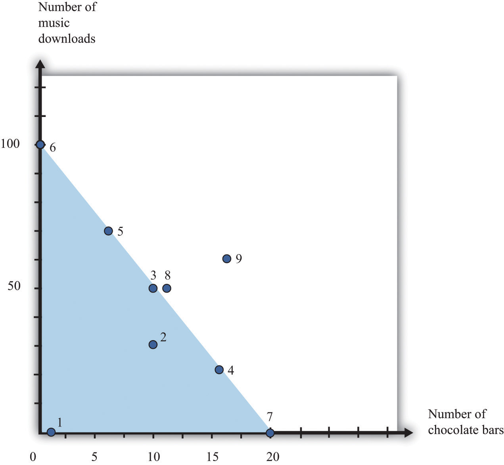The bundles that are affordable are in the budget set, shown here as a triangle.
Every point—that is, every combination of downloads and chocolate bars—that lies on or inside this triangle is affordable. Points outside the triangle are not affordable, so they are not in the budget set.
We now have a picture of the budget set. However, you might be curious about whether we have sneaked in any assumptions to do this. This is a Principles of Economics book, so we must start by focusing on the basics. We do our best throughout the book to be clear about the different assumptions we make, including their importance.
We assume no saving or borrowing. It is easy to include saving or borrowing in this story, though. We think of borrowing as being an addition to your income, and we think of saving as one more kind of spending. Thus if you borrow, the budget set is described by
total spending ≤ disposable income + borrowing.If you save, the budget set is described by
total spending + spending ≤ disposable income.Continuing with our two-goods example, we know that
spending on chocolate = number of chocolate bars × price of a chocolate barand
spending on downloads = number of downloads × price of download.When total spending is exactly equal to total disposable income, then
(number of chocolate bars × price of a chocolate bar) + (number of downloads × price of download) = disposable income.Toolkit: Section 31.1 "Individual Demand"
The budget line lists all the goods and services that are affordable, given prices and income, assuming you spend all your income.
The difference between the definitions of the budget set and the budget lineAll the goods and services that are affordable, given prices and income, assuming you spend all your income. is that there is an inequality in the budget set and an equality in the budget line:
total spending = disposable income.Figure 4.4 The Budget Line
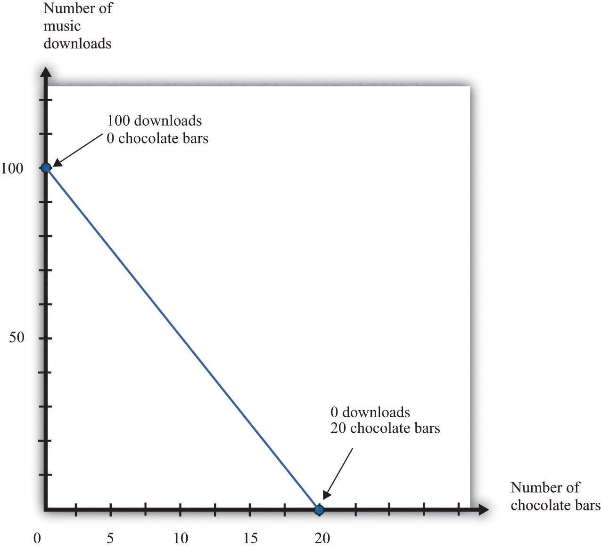The bundles that are exactly affordable are on the budget line.
In the two-goods example, the budget line is the outside edge of the budget set triangle, as shown in Figure 4.4 "The Budget Line". What information do we need to draw the budget line? If we know both prices and the total amount of income, then this is certainly enough. In fact, we need only two pieces of information (not three) because basic mathematics tells us that it is enough to know two points on a line: once we have two points, we can draw a line. In practice, the easiest way to draw a budget line is to find the intercepts—the points on each axis. These correspond to how much you can obtain of each product if you consume 0 of the other. If you don’t buy any chocolate bars, you have enough income to buy 100 downloads. If the number of chocolate bars is 0, then the budget line becomes
number of downloads × price of download = disposable income,so
Similarly, if the number of downloads is 0,
So we have two points on the budget line: (1) 0 chocolate bars and 100 downloads and (2) 0 downloads and 20 chocolate bars.
Another way to describe the budget line is to write the equation of the line in terms of its intercept (on the vertical axis) and its slope:To derive this equation, go back to the budget line and divide both sides by the price of a download:Rearranging, we get the equation in the text.
The intercept is which answers the following question: “How many downloads can you obtain if you buy no chocolate?” As we have already seen, this is 100 in our example.
The slope is
which answers the following question: “What is the rate at which you can trade off downloads for chocolate bars?” In our example, this is −5. If you give up 1 chocolate bar, you will have an extra $5 (the price of a chocolate bar), which allows you to buy 5 more downloads.
The negative slope of the budget line says that to get more downloads, you must give up some chocolate bars. The cost of getting more downloads is that you no longer have the opportunity to buy as many chocolate bars. More generally, economists say that the opportunity costWhat you must give up to carry out an action. of an action is what you must give up to carry out that action. Likewise, to get more chocolate bars, you must give up some downloads. The opportunity cost of buying a chocolate bar is that you do not have that the money available to purchase downloads. The idea of opportunity cost pervades economics.
You may well have heard the following quotation that originated in economics: “There is no such thing as a free lunch.” This statement captures the insight that everything has an opportunity cost, even if it is not always obvious who pays. Economists’ habit of pointing out this unpleasant truth is one reason that economics is labeled “the dismal science.”Although economists may dislike this characterization of their profession, they can take pride in its origin. The term was coined by Thomas Carlyle about 150 years ago, in the context of a debate about race and slavery. Carlyle criticized famous economists of the time, such as John Stuart Mill and Adam Smith, who argued that some nations were richer than others not because of innate differences across races but because of economic and historical factors. These economists argued for the equality of people and supported the freedom of slaves.
We said that a goal of this chapter is to help you make good decisions. One ingredient of good decision making is to understand the trade-offs that you face. Are you thinking of buying a new $200 mobile phone? The cost of that phone is best thought of, not as a sum of money, but as the other goods or services that you could have bought with that $200. Would you rather have 200 new songs for your existing phone instead? Or would you prefer 20 trips to the movies, 40 ice cream cones, or $200 worth of gas for your car? Framing decisions in this way can help you make better choices.
Your choices reflect two factors. One is what you can afford. The budget set and the budget line are a way of describing the combinations of goods and services you can afford. The second factor is what you like, or—to use the usual economic term—your preferences.
Economists don’t pretend to know what makes everyone happy. In our role as economists, we pass no judgment on individual tastes. Your music downloads might be Gustav Mahler, Arctic Monkeys, Eminem, or Barry Manilow. But we think it is reasonable to assume three things about the preferences that underlie your choices: (1) more is better, (2) you can choose, and (3) your choices are consistent.
Economists think that you are never satisfied. No matter how much you consume, you would always like to have more of something. Another way of saying this is that every good is indeed “good”; having more of something will never make you less happy. This assumption says nothing more than people don’t usually throw their income away. Even Bill Gates is not in the habit of burning money.
“More is better” permits us to focus on the budget line rather than the budget set. In Figure 4.3 "The Budget Set", you will not choose to consume at a point inside the triangle of the budget set. Instead, you want to be on the edge of the triangle—that is, on the budget line itself. Otherwise, you would be throwing money away. It also allows us to rank some of the different bundles in Table 4.1 "Spending on Music Downloads and Chocolate Bars". For example, we predict you would prefer to have bundle 3 rather than bundle 2 because it has the same number of chocolate bars and more downloads. Likewise, we predict you would prefer bundle 8 to bundle 3: bundle 8 has the same number of downloads as bundle 3 but more chocolate bars.
By the way, we are not insisting that you must eat all these chocolate bars. You are always allowed to give away or throw away anything you don’t want. Equally, the idea that more is better does not mean that you might not be sated with one particular good. It is possible that one more chocolate bar would make you no happier than before. Economists merely believe that there is always something that you would like to have more of.
“More is better” does not mean that you necessarily prefer a bundle that costs more. Look at bundles 7 and 9. Bundle 7 contains 0 downloads and 20 chocolate bars; it costs $100. Bundle 9, which contains 70 downloads and 16 chocolate bars, costs $150. Yet someone who loves chocolate bars and has no interest in music would prefer bundle 7, even though its market value is less.
Economists suppose that you can always make the comparison between any two bundles of goods and services. If you are presented with two bundles—call them A and B—then the assumption that “you can choose” says that one of the following is true:
Look back at Table 4.1 "Spending on Music Downloads and Chocolate Bars". The assumption that “you can choose” says that if you were presented with any pair of bundles, you would be able to indicate which one you liked better (or that you liked them both equally much). This assumption says that you are never paralyzed by indecision.
“More is better” allows us to draw some conclusions about the choices you would make. If we gave you a choice between bundle 3 and bundle 8, for example, we know you will choose bundle 8. But what if, say, we presented you with bundle 4 and bundle 5? Bundle 5 has more downloads, but bundle 4 has more chocolate bars. “You can choose” says that, even though we may not know which bundle you would choose, you are capable of making up your mind.
Finally, economists suppose that your preferences lead you to behave consistently. Based on Table 4.1 "Spending on Music Downloads and Chocolate Bars", suppose you reported the following preferences across combinations of downloads and chocolate bars:
Each choice, taken individually, might make sense, but all three taken together are not consistent. They are contradictory. If you prefer bundle 3 to bundle 4 and you prefer bundle 4 to bundle 5, then a common-sense interpretation of the word “prefer” means that you should prefer bundle 3 to bundle 5.
Consistency means that your preferences must not be contradictory in this way. Put another way, if your preferences are consistent and yet you made these three choices, then at least one of these choices must have been a mistake—a bad decision. You would have been happier had you made a different choice.
We have now looked at your opportunities, as summarized by the budget set, and also your preferences. By combining opportunities and preferences, we obtain the economic approach to individual decision making. Economists make a straightforward assumption: they suppose you look at the bundles of goods and services you can afford and choose the one that makes you happiest. If the claims we made about your preferences are true, then you will be able to find a “best” bundle of goods and services, and this bundle will lie on the budget line. We know this because (1) you can compare any two points and (2) your preferences will not lead you to go around in circles.
Figure 4.5 Choosing a Preferred Point on the Budget Line

An individual’s preferred point reflects opportunities, as given by the budget line, and preferences. The preferred point will lie on the budget line, not inside, because of the assumption that more is better.
In Figure 4.5 "Choosing a Preferred Point on the Budget Line", we indicate an example of an individual’s preferred point. The preferred point is on the budget line and—by definition—is the best combination for the individual that can be found in the budget set. At the preferred point, the individual cannot be better off by consuming any other affordable bundle of goods and services.
There is one technical detail that we should add. It is possible that an individual might have more than one preferred point. There could be two or more combinations on the budget line that make an individual equally happy. To keep life simple, economists usually suppose that there is only a single preferred point, but nothing important hinges on this.
Economists typically assume rationalityThe ability of individuals to (1) evaluate the opportunities that they face and (2) choose among them in a way that serves their own best interests. of decision makers, which means that people can do the following:
Is this a good assumption? Are people really as rational as economists like to think they are? We would like to know if people’s preferences do satisfy the assumptions that we have made and if people behave in a consistent way. If we could hook someone up to a machine and measure his or her preferences, then we could evaluate our assumptions directly. Despite advances in neurobiology, our scientific understanding has not reached that point. We see what people do, not the preferences that lie behind these choices. Therefore, one way to evaluate the economic approach is to look at the choices people make and see if they are consistent with our assumptions.
Imagine you have an individual’s data on download and chocolate bar consumption over many months. Also, suppose you know the prices of downloads and chocolate bars each month and the individual’s monthly income. This would give you enough information to construct the individual’s budget sets each month and look for behavior that is inconsistent with our assumptions. Such inconsistency could take different forms.
The first option is inconsistent with our idea that “more is better.” As for the second option, it is generally inconsistent to prefer bundle A over bundle B at one time yet prefer bundle B over bundle A at a different time. (It is not necessarily inconsistent, however. The individual might be indifferent between bundles A and B, so she doesn’t care which bundle she consumes. Or her preferences might change from one month to the next.)
Economists are not the only social scientists who study how we make choices. Psychologists also study decision making, although their focus is different because they pay more attention to the processes that lie behind our choices. The decision-making process that we have described, in which you evaluate each possible option available to you, can be cognitively taxing. Psychologists and economists have argued that we therefore often use simpler rules of thumb when we make decisions. These rules of thumb work well most of the time, but sometimes they lead to biases and inconsistent choices. This book is about economics, not psychology, so we will not discuss these ideas in too much detail. Nevertheless, it is worth knowing something about how our decision making might go awry.
On occasion, we make choices that are apparently inconsistent. Here are some examples.
The endowment effect. Imagine you win a prize in a contest and have two scenarios to consider:
Rational decision makers would treat these two situations as essentially identical: if you get the ticket, you can sell it on eBay for $500; if you get $500 cash, you can buy a ticket on eBay. Yet many people behave differently in the two situations. If they get the ticket, they do not sell it, but if they get the cash, they do not buy the ticket. Apparently, we often feel differently about goods that we actually have in our possession compared to goods that we could choose to purchase.
Mental states. We may be in a different mental state when we buy a good from when we consume it. If you are hungry when you go grocery shopping, then you may buy too much food. When we buy something, we have to predict how we will be feeling when we consume it, and we are not always very good at making these predictions. Thus our purchases may be different, depending on our state of mind, even if prices and incomes are the same.
Anchoring. Very often, when you go to a store, you will see that goods are advertised as “on sale” or “reduced from” some price. Our theory suggests that people simply look at current prices and their current income when deciding what to buy, in which case they shouldn‘t care if the good used to sell at a higher price. In reality, the “regular price” serves as an anchor for our judgments. A higher price tends to increase our assessment of how much the good is worth to us. Thus we may make inconsistent choices because we sometimes use different anchors.
How should we interpret the evidence that people are—sometimes at least—not quite as rational as economics usually supposes? Should we give up and go home? Not at all. Such findings deepen our understanding of economic behavior, but there are many reasons why it is vital to understand the behavior of rational individuals.
Economics helps us make better decisions. The movie Heist has dialogue that sums up this idea:
| D. A. Freccia: | You’re a pretty smart fella. |
| Joe Moore: | Ah, not that smart. |
| D. A. Freccia: | [If] you’re not that smart, how’d you figure it out? |
| Joe Moore: | I tried to imagine a fella smarter than myself. Then I tried to think, “what would he do?” |
Most of us are “not that smart”; that is, we are not smart enough to determine what the rational thing to do is in all circumstances. Knowing what someone smarter would do can be very useful indeed.The quote comes from the Internet Movie Database (http://www.imdb.com). We first learned of the scene from B. Nalebuff and I. Ayres, Why Not? (Boston: Harvard Business School Press, 2003), 46. Further, if we understand the biases and mistakes to which we are all prone, then we can do a better job of recognizing them in ourselves and adjusting our behavior accordingly.
People may be rational yet have more complicated preferences than we have considered.
Fairness. People sometimes care about fairness and so may refuse to buy something because the price seems unfair to them. In one famous example, people were asked to imagine that they are on the beach and that a friend offers to buy a cold drink on their behalf.See Richard Thaler, “Mental Accounting and Consumer Choice, Marketing Science 4 (1985): 199–214. They are asked how much they are willing to pay for this drink. The answer to this question should not depend on where the drink is purchased. After all, they are handing over some money and getting a cold drink in return. Yet people are prepared to pay more if they know that the friend is going to buy the drink from a hotel bar rather than a local corner store. They think it is reasonable for hotels to have high prices, but if the corner store charged the same price as the hotel, people think that this is unfair and are unwilling to pay.
Altruism. People sometimes care not only about what they themselves consume but also about the well-being of others. Such altruism leads people to give gifts, to give to charity, to buy products such as “fair-trade” coffee, and so on.
Relative incomes. Caring about the consumption of others can take more negative forms as well. People sometimes care about whether they are richer or poorer than other people. They may want to own a car or a barbecue grill that is bigger and better than that of their neighbors.
More complicated preferences such as these are not irrational, but they require a more complex framework for decision making than we can tackle in a Principles of Economics book.We say more about some of these ideas in Chapter 13 "Superstars".
Now that we have a framework for thinking about your choices, we can now explain one of the most fundamental economic ideas: demand. Here we focus on the demand of a single individual.In Chapter 6 "eBay and craigslist", we develop the idea of the market demand curve, which combines the demands of many individuals. We use two different ways of thinking about your demand for a good or a service. One approach builds on the idea of the budget set. The other focuses on how much you would be willing to pay for a good or service. In combination, they give us a detailed understanding of how economic decisions are made.
As you visit stores at different times, you undoubtedly notice that the prices of goods and services change. At the same time, your income may also change from one month to the next. So if we were to look at your budget set monthly, we would typically find it changing from one month to the next. We would then expect that you would choose different combinations of goods and services from one month to the next.
To keep things simple, suppose we are still in a world of two goods—downloads and chocolate bars—and that you do no saving. We will describe your demand for chocolate bars. (If you like, you can think of downloads as representing all the other goods and services you consume.) Given prices and your income, you pick the best point on the budget line. Look again at the “preferred” point in Figure 4.5 "Choosing a Preferred Point on the Budget Line". One way to interpret this point is that it tells us how many chocolate bars you will buy, given your income and given the price of a chocolate bar and other goods. Using this as a reference point, we now ask how your choice will change as income changes and then as the price of a chocolate bar changes.
Imagine that your income increases. Figure 4.6 "An Increase in Income" shows what happens to the budget line. Higher income means that you can afford to buy more chocolate bars and more downloads, so the budget line shifts outward. The slope of the budget line is unchanged because there is no change in the price of a chocolate bar relative to downloads.
Figure 4.6 An Increase in Income
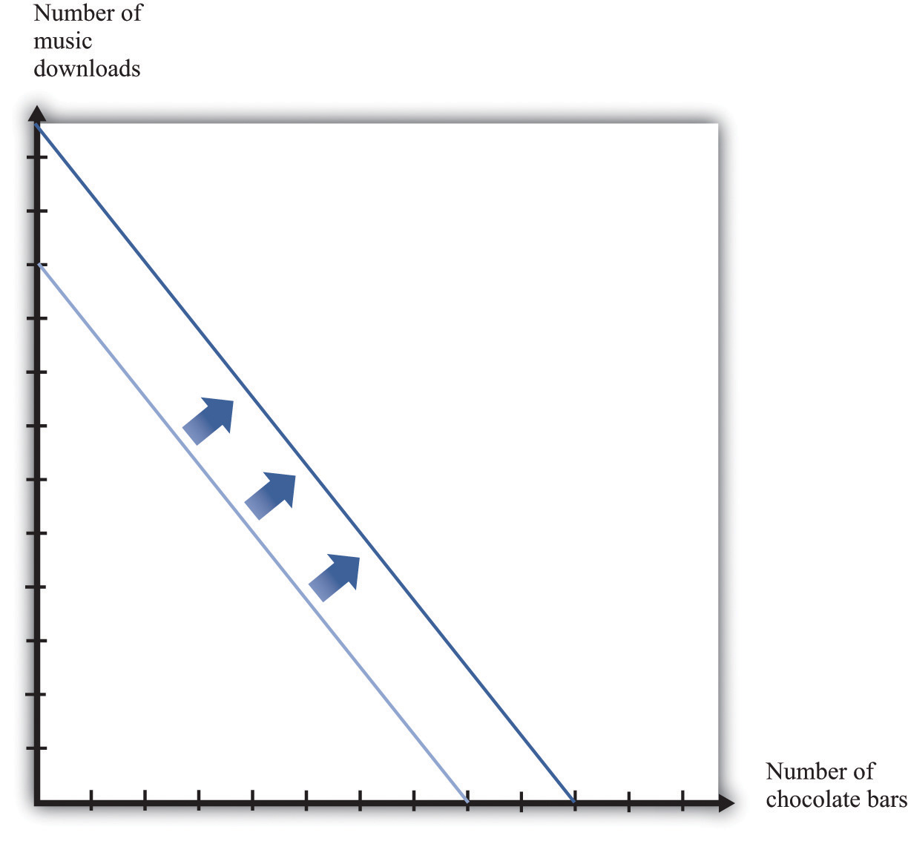An increase in income shifts the budget line outward.
What happens to your consumption of chocolate bars? There are two possibilities (Figure 4.7 "The Consequences of an Increase in Income"): the increase in income leads you to consume either more chocolate bars or fewer chocolate bars. Both are plausible, and either is possible. (Of course, you might also choose exactly the same amount as before.) We might think that the more normal case is that higher income would lead to higher chocolate bar consumption. If a good has a property that you will consume more of it when you have higher income, we call it a normal goodA good that is consumed more when income increases..
Figure 4.7 The Consequences of an Increase in Income
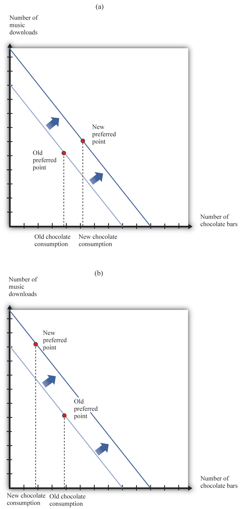In response to an increase in income, two things are possible: the consumption of chocolate bars may increase (a) or decrease (b).
Under some circumstances, higher income leads to lower consumption. For example, suppose you are surviving in college on a diet consisting of mostly instant noodles. When you graduate college and have higher income, you can afford better things to eat, so you will probably consume a smaller quantity of instant noodles. Economists call such products inferior goodsA good that is consumed less when income increases.. If a particular product exists in several qualities (cheap versus expensive cuts of meat, for example), we often find that the low-quality version is an inferior good. A good might be normal for one consumer and inferior for another. More precisely, therefore, we say that a good is inferior if, on average, higher income leads to lower consumption.
Economists make a further distinction among different kinds of normal goods. If you spend a larger fraction of your income on a particular good as your income increases, then we say that the good is a luxury goodA normal good with the additional feature that consumption increases by a greater percentage than income.. Another way of saying this is that for a luxury good, the percentage increase in consumption is bigger than the percentage increase in income.
We can also define these ideas in terms of the income elasticity of demandA measure of how responsive the quantity demanded is to changes in income., which is a measure of how sensitive demand is to changes in income. For an inferior good, the income elasticity of demand is negative: higher income leads to lower consumption. For a normal good, the income elasticity of demand is positive. And for a luxury good, the income elasticity of demand is greater than one.
Toolkit: Section 31.2 "Elasticity"
For more discussion of normal, inferior, and luxury goods, see the toolkit.
The distinctions among these different kinds of goods are crucial for managers of firms. To predict sales, managers need to know whether the products they are selling are normal, inferior, or luxury goods. Firms that sell inferior goods tend to do well when the economy as a whole is doing poorly and vice versa. By contrast, firms selling luxury goods will do particularly poorly when the economy as a whole is performing poorly.
Now we look at what happens if there is a change in the price of a chocolate bar. Suppose the price decreases. First, let us analyze what this means in terms of our picture. Remember that the intercepts of the budget line tell you how much you can have of one good if you consume none of the other. If you consume no chocolate bars, then a decrease in the price of a chocolate bar has no effect on your consumption. You can consume exactly the same number of downloads as before. The intercept on the vertical axis therefore does not move. However, a decrease in the price of a chocolate bar means that, if you consume only chocolate bars, then you can have more than before. The intercept on the horizontal axis moves outward. One way to see this is to remember that this intercept is given by
Figure 4.8 "A Decrease in the Price of a Chocolate Bar" illustrates a decrease in the price of a chocolate bar. The new budget line lies outside the old budget line. Any bundle you could have bought at the old prices is still affordable now, and you can also get more. A decrease in the price of a chocolate bar, in other words, makes you better off. In addition, the slope of the budget line changes: it is flatter than before. The slope of the budget line reflects the way in which the market allows you to trade chocolate bars for other products. If you choose to consume fewer downloads, the reduction in the price of a chocolate bar means that you get relatively more chocolate bars in exchange.
Figure 4.8 A Decrease in the Price of a Chocolate Bar
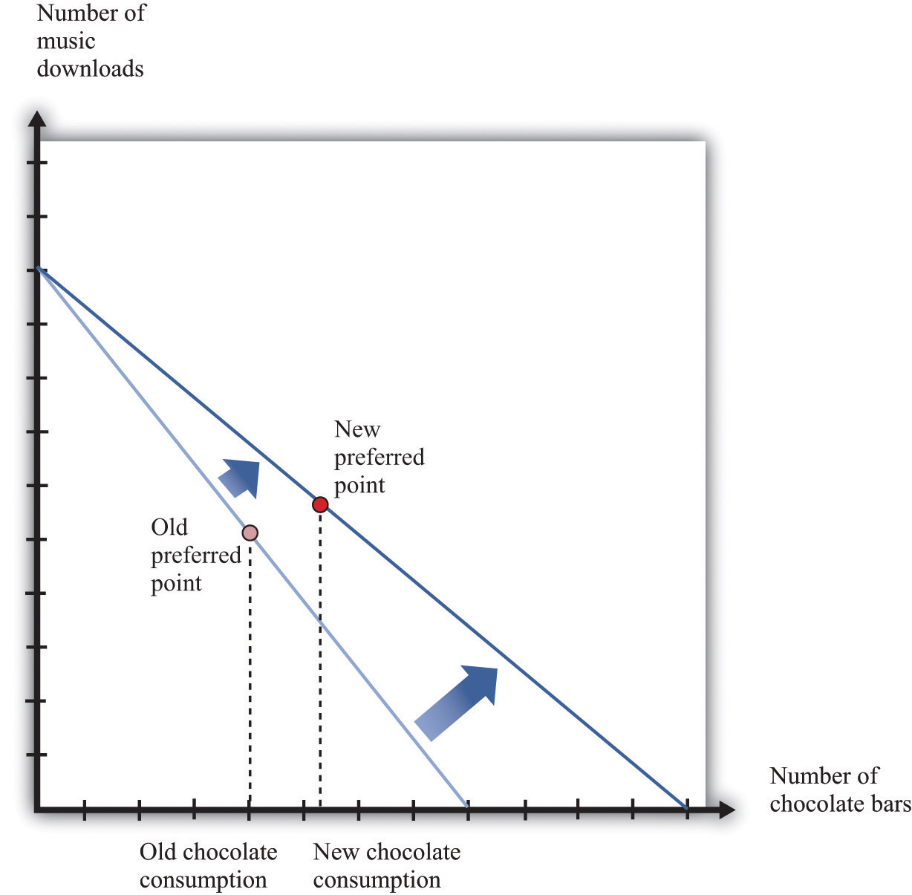A decrease in the price of a chocolate bar causes the budget line to rotate. The result is an increase in the quantity of chocolate bars consumed.
Figure 4.8 "A Decrease in the Price of a Chocolate Bar" also shows a new consumption point. In response to the decrease in the price of a chocolate bar, we see an increase in the consumption of chocolate bars. The idea that people almost always consume more of a good when its price decreases is one of the fundamental ideas of economics. Indeed, it is sometimes called the law of demandWhen the price of a good decreases, the quantity demanded increases.. It is certainly intuitive that lower prices lead people to consume more. There are two reasons why we expect to see this result.
First, if a good (for example, chocolate bars) decreases in price, it becomes cheaper relative to other goods. Its opportunity cost—that is, the amount of other goods you must give up to get a chocolate bar—has decreased. The lower opportunity cost means that there is a substitution effectIf one good becomes cheaper relative to other goods, this leads away from other goods and toward that particular good. away from other goods and toward chocolate bars. Second, a decrease in the price of a chocolate bar also means that you can afford more of everything, including chocolate bars. Provided chocolate bars are a normal good, this income effectWhen a good decreases in price, the buyer can afford more of everything, including that good. will also lead you to want to consume more chocolate bars. If chocolate bars are inferior goods, the income effect leads you to want to consume fewer chocolate bars.
In Figure 4.8 "A Decrease in the Price of a Chocolate Bar", the substitution effect is reflected by the fact that the budget line changes slope. The flatter budget line tells us that the opportunity cost of chocolate bars in terms of downloads has decreased. The income effect shows up in the fact that the new budget set includes the old budget set. You can consume your previous bundle of goods and still have some income left over to buy more.
Based on the idea of the law of demand, we can construct your individual demand curveThe quantity of a good that an individual demands at each price, all else being the same. for chocolate bars. We do so by drawing the budget set for each different price of a chocolate bar, seeing how much you buy, and then plotting this data. For example, we might find that your purchases of chocolate bars look like those in Table 4.2 "Demand for Chocolate Bars". If we plot these points on a graph and then “fill in the gaps,” we get a diagram like Figure 4.9 "The Demand Curve". This is your demand curve for chocolate bars. It tells how many chocolate bars you would purchase at any given price. The law of demand means that we expect this curve to slope downward. If the price increases, you consume less. If the price decreases, you consume more.
Table 4.2 Demand for Chocolate Bars
| Price per Bar ($) | Quantity of Chocolate Bars Bought |
|---|---|
| 1 | 12 |
| 2 | 6 |
| 3 | 4 |
| 4 | 3 |
| 5 | 2.4 |
| 6 | 2 |
Figure 4.9 The Demand Curve
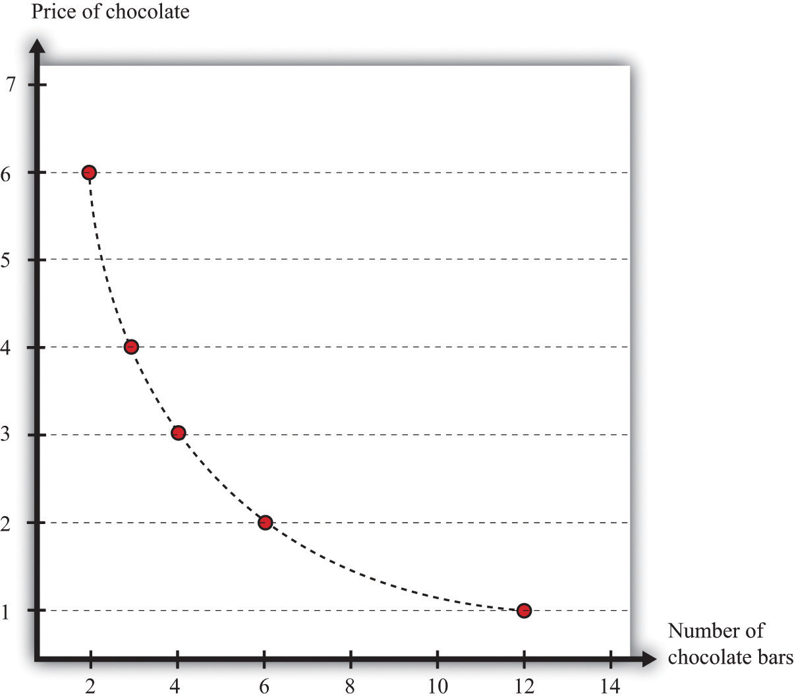Table 4.2 "Demand for Chocolate Bars" contains an example of some observations on demand. At different prices from $1 to $6, we see the number of chocolate bars purchased. If we fill in the gaps, we obtain a demand curve.
Toolkit: Section 31.1 "Individual Demand"
The individual demand curve is drawn on a diagram with the price of a good on the vertical axis and the quantity demanded on the horizontal axis. It is drawn for a given level of income.
We must be careful to distinguish between movements along the demand curve and shifts in the demand curve. Suppose there is a change in the price of a chocolate bar. Then, as we explained earlier, the budget line shifts, and the quantity demanded of both chocolate bars and downloads will change. This appears in Figure 4.9 "The Demand Curve" as a movement along the demand curve. For example, if the price of a chocolate bar decreases from $4 to $3, then, as in Table 4.2 "Demand for Chocolate Bars", the quantity demanded increases from three bars to four bars. The demand curve does not change; we simply move from one point on the line to another.
If a change in anything other than the price of a chocolate bar causes you to change your consumption of chocolate bars, then there is a shift in the demand curve. For example, suppose you get a pay raise at your job, so you have more income. As long as chocolate bars are a normal good, this increase in income will cause your demand curve for chocolate bars to shift outward. This means that, at any given price, you will buy more of the good when income increases. In the case of an inferior good, an increase in income will cause the demand curve to shift inward. You will buy less of the good when income increases. We illustrate these two cases in Figure 4.10 "Shifts in the Demand Curve: Normal and Inferior Goods".
Figure 4.10 Shifts in the Demand Curve: Normal and Inferior Goods
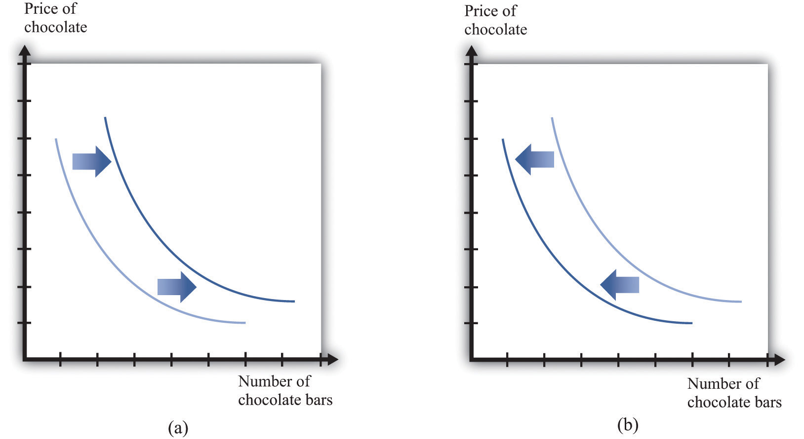(a) If income increases and chocolate bars are a normal good, then the individual demand curve will shift to the right. At every price, a greater quantity of chocolate bars is demanded. (b) If income increases and chocolate bars are inferior goods, then the individual demand curve will shift to the left. In the event of a decrease in income, the two cases are reversed.
The law of demand is highly intuitive and is supported by lots of research for all sorts of different goods and services. We can take it as a reliable fact that in almost all circumstances, the demand curve will indeed slope downward. Yet we might still wonder if there are any exceptions, any cases in which the demand curve slopes upward. There are indeed a few such exceptions.
In these three situations, it is conceivable that we might observe a higher price being associated with a higher quantity of the good being purchased. You should not overestimate the significance of these cases, however, because (1) most products do not fall into any of these categories, and (2) the substitution effect is still in operation for all goods, as is the income effect for all normal goods.
So far, we have said that the number of chocolate bars you want to buy is affected by income and the price of a chocolate bar. Changes in the prices of other goods also have an impact. In general, an increase in a price of another good could cause the demand for chocolate bars to increase or decrease.
Goods are substitutesAn increase in the price of one good leads to increased consumption of the other good. if an increase in the price of one good leads to increased consumption of the other good. CDs and music downloads are one example: if the price of CDs increases, you will obtain more music through downloads.
Goods are complementsAn increase in the price of one good leads to decreased consumption of the other good. if an increase in the price of one good leads to decreased consumption of the other good. For example, DVDs and DVD players are complements. If the price of DVD players decreases, more people will buy DVD players. As a result, more people will want to buy DVDs.
Toolkit: Section 31.2 "Elasticity"
To learn more about substitutes and complements, see the toolkit for formal definitions. (These definitions are presented in terms of the cross-elasticity of demand, which is a measure of how responsive the quantity demanded is to changes in the price of another good.)
There is another way of thinking about demand. Instead of focusing attention on the budget set and the budget line, we can think more directly about your preferences. Imagine you are asked the following question in an interview:
What is the maximum amount you would be willing to pay for one chocolate bar?
In answering this question, you should not worry about what would be a reasonable or fair price for a chocolate bar or even about the price at which this chocolate bar might actually be available. You should simply decide how much you want chocolate bars. For example, you might think that you would really like to have at least one chocolate bar, so you would be willing to pay up to $12 for one bar—that is, you would be happier with one more chocolate bar and up to $12 less in income. This is your valuationThe maximum amount an individual would be willing to pay to obtain that quantity. of one chocolate bar.
Now we ask you some more questions.
What is the maximum amount that you would be willing to pay for two chocolate bars? Three chocolate bars?…
Perhaps you decide you would be willing to pay $18 for two bars, $22 for three bars, and so on. If we kept asking such questions, we might get the first two columns of Table 4.3 "Valuation and Marginal Valuation". We can also plot this valuation (part [a] of Figure 4.11 "Valuation of a Good"). Your valuation is increasing; you always like having more chocolate bars because “more is better.”
Table 4.3 Valuation and Marginal Valuation
| Quantity of Chocolate Bars Bought | Valuation ($) | Marginal Valuation ($) |
|---|---|---|
| 0 | 0.00 | |
| 1 | 12.00 | 12.00 |
| 2 | 18.00 | 6.00 |
| 3 | 22.00 | 4.00 |
| 4 | 25.00 | 3.00 |
| 5 | 27.40 | 2.40 |
| 6 | 29.40 | 2.00 |
Figure 4.11 Valuation of a Good
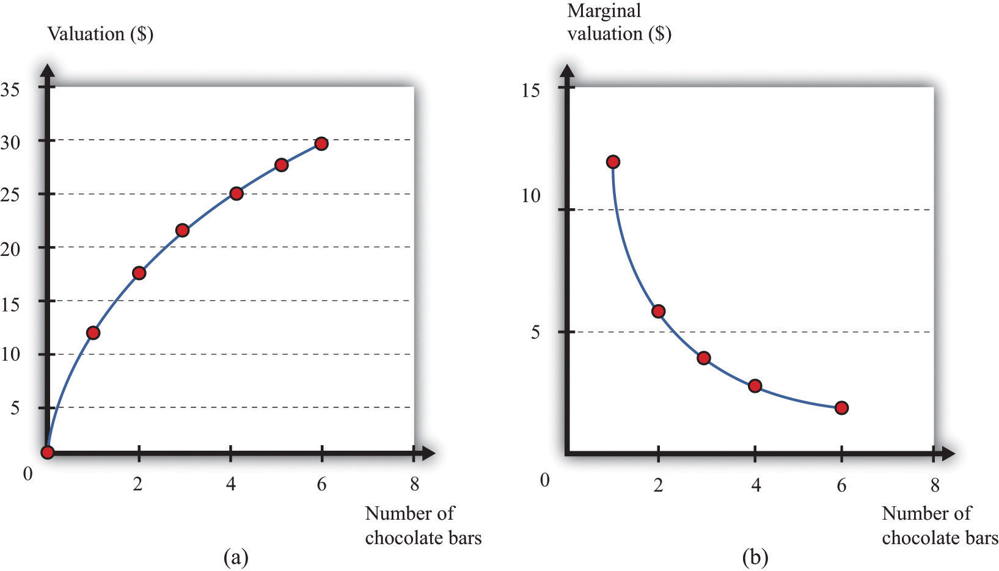Your valuation of a good is the maximum amount that you would be willing to pay, purely on the basis of your desire for the good.
Because you are willing to pay $12 for one bar and $18 for two bars, we know you would be willing to pay an additional $6 for the second chocolate bar. Similarly, if you have two chocolate bars, you would be willing to pay an additional $4 for a third bar. We call the change in your valuation your marginal valuationThe maximum amount an individual would be willing to pay to obtain one extra unit of that good. (see the third column of Table 4.3 "Valuation and Marginal Valuation", which is graphed in part [b] of Figure 4.11 "Valuation of a Good"). Notice that marginal valuation decreases as the quantity of chocolate bars increases. The change in your valuation gets smaller as you obtain more chocolate bars. We can see the same thing in part (a) of Figure 4.11 "Valuation of a Good" from the fact that the valuation curve gets flatter as the quantity of chocolate bars increases.
Toolkit: Section 31.1 "Individual Demand"
An individual’s valuation of some quantity of a product is the maximum amount the individual would be willing to pay to obtain that quantity. An individual’s marginal valuation of some good is the maximum amount the individual would be willing to pay to obtain one extra unit of that product.
It usually seems reasonable to think that marginal valuations will indeed decrease in this way. If you don’t have any chocolate bars, then the first bar is worth a lot to you—$12 in our example. But if you already have five chocolate bars, then the sixth bar is worth only $2 to you. As you obtain more and more of any given product, each additional unit is less and less valuable. For most people, we expect that most products will exhibit such diminishing marginal valuation.
Part (b) of Figure 4.11 "Valuation of a Good" may seem familiar. It is the demand curve for chocolate bars you saw previously in Figure 4.9 "The Demand Curve". This is not an accident or a coincidence. There is a simple decision rule to tell you how much you should buy: when your marginal valuation is greater than the price, you should buy more of the good, stopping only when the marginal valuation of the good has dropped to the level of the price. For example, suppose that chocolate bars are selling for $3.99. You should definitely buy the first chocolate bar, because it is worth $10 to you and will cost you only $3.99. You should buy the second bar as well because it is worth an additional $8 to you; likewise you should buy the third and fourth bars. You don’t buy the fifth bar because it is worth only $3 to you, which is less than what it costs. Thus your decision rule is as follows:
Because the demand curve, by definition, tells you how much you buy at a given price, it is the same as the marginal valuation curve.
We have presented two different ways of thinking about consumer decisions, but the underlying choice is the same. To see how the two approaches are linked, rewrite the decision rule for chocolate bars as buy until
You have a similar decision rule for downloads: buy until
Combining these two equations, we see that
which we can rearrange as
The ratio on the right-hand side of this expression should look familiar. Earlier, we found that the slope of the budget line is
So the marginal valuation of a chocolate bar divided by the marginal valuation of downloads equals minus the slope of the budget line.
What does this mean? The budget line tells us the rate at which the market allows you to trade off chocolate bars for downloads. If you consume one fewer chocolate bar, the number of dollars you will get is equal to the price of a chocolate bar. These dollars will buy you downloads. The ratio of marginal valuations describes how you view the trade-off between chocolate bars and downloads. If you are making good decisions about how to spend your money, then the rate at which you are happy to trade off chocolate bars for downloads equals the rate at which the market allows you to make such trades. If this were not true, then you could make yourself happier by choosing a different bundle on the budget line.
To make good decisions, you need to understand the trade-offs you are making. To put it another way, you need to recognize that every purchase has an opportunity cost, which is summarized by the budget line. If you want more chocolate bars, you must consume less of something else. You also need to find the right point on the budget line—the point that makes you happiest. Most of the time, economists simply assume that you are able to make this decision correctly on the basis of the three assumptions about your preferences that we introduced earlier.
You can also use this theory to help you think about the decisions you make. Suppose you are facing the budget line we discussed earlier and plan to buy 8 chocolate bars and 60 downloads (as in Figure 4.5 "Choosing a Preferred Point on the Budget Line"). In principle, you need to compare that bundle with every other combination on the budget line. In practice, it is enough—most of the time at least—to compare it with nearby bundles. For example, if you prefer this bundle to 7 chocolate bars and 65 downloads, and you also prefer this bundle to 9 chocolate bars and 55 downloads, then you can be reasonably confident that you have found the best bundle. If a small change won’t make you happier, then neither will a large change.
So far we have considered situations where you might buy multiple units of a good—for example, 20 music downloads or 5 chocolate bars. To keep things simple, we also supposed that you could buy fractional amounts, such as 20.7 downloads, or 3.25 chocolate bars. This assumption gives a decision rule for purchase: buy until marginal valuation equals price.
Some purchase decisions are better thought of as “buy or don’t buy.” Large, infrequent purchases fall into this category. Think, for example, about the decision to buy a new car, a new microwave, or an expensive vacation. You won’t buy five microwaves because they are cheap. The decision rule for purchase is even easier in this case: buy if your valuation of the good exceeds the price of the good. In fact, this is really no different from our earlier decision rule. Because you are only ever thinking about buying one unit, your valuation and your marginal valuation are the same thing (look back at the first two rows of Table 4.3 "Valuation and Marginal Valuation"). And because in this case it does not make sense to suppose you can buy fractional amounts of the good, you cannot keep buying until your marginal valuation decreases all the way to the price.
If a buyer is interested in purchasing one and only one unit of a good, the unit demand curveThe special case of the individual demand curve when a buyer might purchase either zero units or one unit of a good but no more than one unit. tells us the price at which he is willing to buy. Below his valuation, he buys the good. Above his valuation, he does not buy the good. A unit demand curve is shown in Figure 4.12 "Unit Demand". In this example, the buyer’s valuation is $3,000.
Figure 4.12 Unit Demand
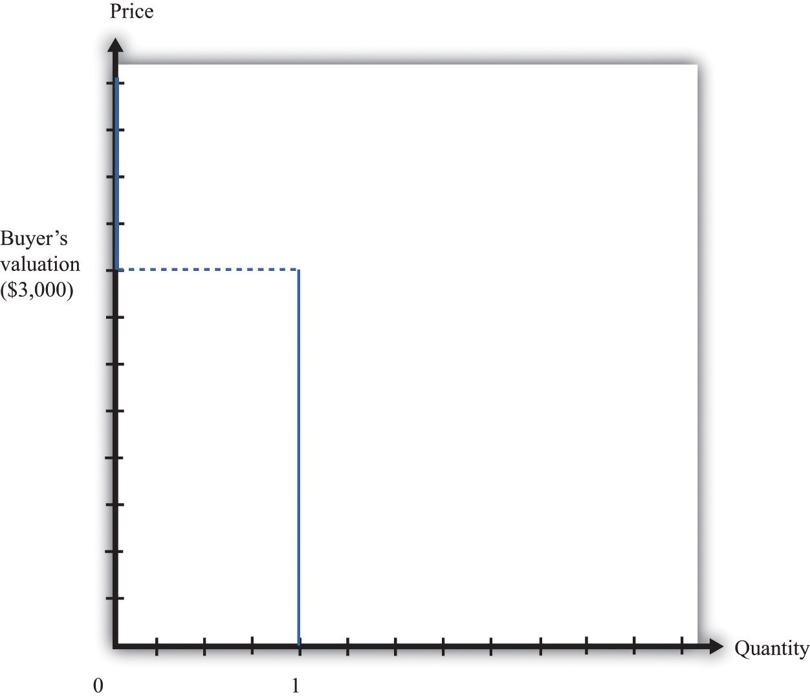The buyer follows this decision rule: “Buy if the price is less than valuation.” If the price is greater than $3,000, the buyer will not purchase. The quantity demanded is zero. If the price is less than $3,000, the buyer will purchase one unit. No matter how low the price decreases, the buyer will not want more than a single unit. This is an example of unit demand.
To see where such a valuation could come from, look at Figure 4.13 "The Valuation of a Car". Suppose you are thinking about buying a car. The figure shows our standard downloads-and-chocolate-bar diagram, except that there are two budget lines. The outer budget line applies in the case where you do not buy the car. You have a preferred point in terms of downloads and chocolate bars (A). If you buy the car, you have less income to spend on everything else. The effect is to shift your budget line inward, in which case you have a new preferred point (B). The thought experiment here is to decrease your income and shift your budget line inward until you are equally happy with the two bundles. The change in your income—the amount by which the budget line must shift—is your valuation of the car. Your valuation, in other words, is the opportunity cost of the car: if you buy the car, you can only consume bundle B rather than bundle A.
Figure 4.13 The Valuation of a Car
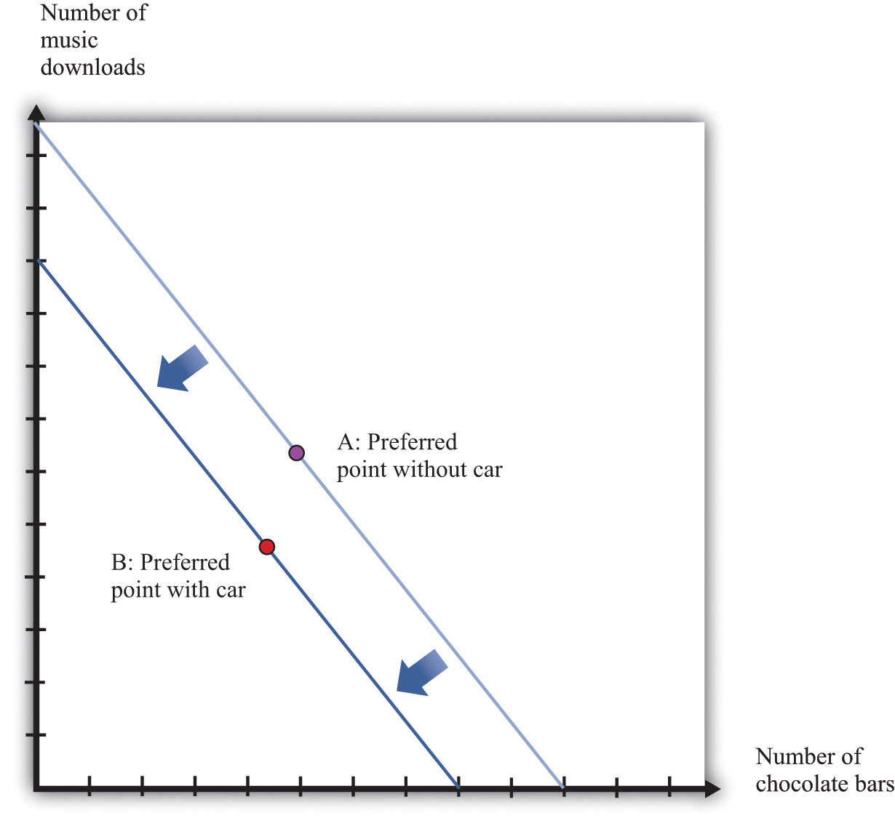If you don’t buy a car, your preferred mix of chocolate bars and downloads is at point A. If you buy a car, then you no longer have that income available to spend on chocolate bars and downloads. Your budget line shifts inward, and you consume at your preferred point B. Now imagine that you are equally happy at point A and point B. Then the difference in income is equal to your valuation of the car. Thus the valuation of a car is its opportunity cost in terms of other goods.
Economists’ theories are all well and good. But we do not actually get to see people’s preferences or marginal valuations. We observe what people actually do. To see our theory in action, we can look at household budget studies. These are surveys where government statisticians interview households and ask them how they spend their income. For example, Table 4.4 "Budget Shares in the United States" contains data on US consumer expenditures for the years 2005, 2007, and 2009.
Table 4.4 Budget Shares in the United States
| Year | 2005 | 2005 (Under 25) | 2007 | 2007 (Under 25) | 2009 | 2009 (Under 25) |
|---|---|---|---|---|---|---|
| Income (before tax) | 58,712 | 27,404 | 63,091 | 31,443 | 62,857 | 25,695 |
| Spending | 46,409 | 27,770 | 49,638 | 29,457 | 49,067 | 28,119 |
| Category | Percentage of Total Spending | |||||
| Food | 12.8 | 14.2 | 12.4 | 14.1 | 13.0 | 14.9 |
| Alcohol | 0.9 | 1.4 | 0.9 | 1.6 | 0.9 | 1.2 |
| Housing | 32.7 | 32.2 | 34.1 | 32.6 | 34.4 | 34.6 |
| Apparel | 4.1 | 5.7 | 3.8 | 5.0 | 3.5 | 5.0 |
| Transportation | 18.0 | 21.6 | 17.6 | 19.4 | 15.9 | 19.0 |
| Health care | 5.7 | 2.5 | 5.7 | 2.7 | 6.4 | 2.4 |
| Entertainment | 5.2 | 5.0 | 5.4 | 4.9 | 5.5 | 4.4 |
| Personal care products and services | 1.2 | 1.2 | 1.2 | 1.1 | 1.2 | 1.3 |
| Reading | 0.3 | 0.2 | 0.2 | 0.2 | 0.2 | 0.2 |
| Education | 2.0 | 4.9 | 1.9 | 6.1 | 2.2 | 6.8 |
| Tobacco | 0.7 | 1.1 | 0.7 | 1.0 | 0.8 | 1.2 |
| Personal insurance and pensions | 11.2 | 7.7 | 10.8 | 8.3 | 11.2 | 7.1 |
| Other | 5.3 | 2.3 | 5.3 | 3.0 | 4.8 | 1.9 |
Source: US Department of Labor, “Consumer Expenditures Survey,” table 47, http://www.bls.gov/cex/2005/share/age.pdf, http://www.bls.gov/cex/2007/share/age.pdf, and http://www.bls.gov/cex/2009/share/age.pdf, all accessed February 24, 2011.
You can see that, on average, households spend a little more than 45 percent of their income on food and housing. Insurance is also a large category, with about 11 percent of income being spent on it.Chapter 5 "Life Decisions" discusses why we buy insurance. Interestingly, the budget shares do not change much over the three years despite the differences in income and spending. From this we see that, although individual goods may be inferior or luxury goods, such differences are largely offset when we look at broad categories of goods or services.
The table also contains data for households under age 25.This is based on the age of the reference person in the household, who is the individual who owns or rents the property. We can compare the spending patterns of this group against all households. Not surprisingly, the younger group earns less than the average household. Also, this younger group often spends more than it earns, indicating that younger people are borrowing, on average. The younger group spends more on alcohol, transportation, and education and much less on health care and insurance than the average household. This makes sense given the health status of young individuals as well as their demand for education.
Table 4.5 "United Kingdom Budget Study" is a UK budget study for households headed by young people (under the age of 30) in 2009. It shows how these households allocated their expenditures over a week.The British source is as follows: Office for National Statistics, Family Spending, 2010, table A.11, accessed January 24, 2011, http://www.statistics.gov.uk/downloads/theme_social/family-spending-2009/familyspending2010.pdf. We can compare these figures against those for young people in the United States. (We need to be careful in making comparisons because the categories for spending are not exactly the same across surveys. Still, it is useful to explore these differences.) In the United Kingdom, spending on food and housing is much lower for these younger households than in the United States. Health also has a much lower expenditure share.
Table 4.5 United Kingdom Budget Study
| Category of Expenditure | Spending Share (%) |
|---|---|
| Food and nonalcoholic drinks | 9.2 |
| Alcoholic beverages, tobacco, and narcotics | 2.2 |
| Clothing and footwear | 4.3 |
| Housing, fuel, and power | 22.6 |
| Household goods and services | 4.4 |
| Health | 0.9 |
| Transport | 12.2 |
| Communication | 2.7 |
| Recreation and culture | 9.0 |
| Education | 4.5 |
| Restaurants and hotels | 8.0 |
| Miscellaneous goods and services | 7.1 |
| Other expenditure items | 13.0 |
Source: Data from Office for National Statistics, Family Spending, 2010, table A.11, accessed January 24, 2011, http://www.statistics.gov.uk/downloads/theme_social/family-spending-2009/familyspending2010.pdf.
So far we have discussed how you choose to spend your money. There is another decision you make every day: how to spend your time. You have 24 hours each day in which to do all the different things you want to do: work, sleep, eat, study, watch television, surf the Internet, go to the movies, and so on. Time, like money, is scarce. Given that you have only 24 hours to allocate in every day, how do you decide which activities to spend your time on? This problem is very similar to the allocation of your budget, with one key difference: you cannot save or borrow time in the way that you can save or borrow money. There are exactly 24 hours in each day—no more, no less.
We begin with the most fundamental time allocation problem for all students: choosing between studying and sleeping. As before, we keep things simple by thinking about only two possible uses of your time. You are given 24 hours in the day to study and sleep. How should you allocate your time?
As with the allocation of your income, there are two aspects of this problem. First, there is a budget constraint—only now it is your time that is scarce, not money. Second, you have your own preferences about sleep and study time. Your ability to meet your desires is constrained by the scarcity of your time: you must trade off one activity for another.
The time budget constraintThe restriction that the sum of the time you spend on all your different activities must be exactly 24 hours each day. is the restriction that there are only 24 hours in the day. It is shown in Figure 4.14 "The Time Budget Constraint" and is the counterpart to the budget line in our earlier discussion. Any point in this figure represents a combination of sleep and study time. The sum of sleep and study time must equal 24 hours (remember we are supposing that these are the only ways you spend your time). Thus your allocation of your time must lie somewhere on this line.
Figure 4.14 The Time Budget Constraint
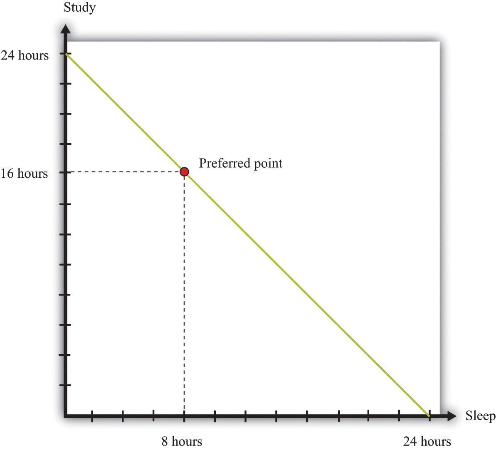The time allocation line shows your options for dividing your time between study and sleep.
Figure 4.14 "The Time Budget Constraint" also shows one possible choice that you might make: allocating 8 hours to sleep and 16 hours to studying. The choice of this point reflects your desires for sleep and study. As with the spending decision, we pass no judgment, as economists, on the actual decision you make. We suppose you typically make the choice that makes you the happiest.
At your preferred point, your choice to sleep for 8 hours means that your study time must equal 16 hours; equivalently, your choice to study for 16 hours means that you must sleep for 8 hours. Any increase in one activity must be met by a reduction in time for the other. The opportunity cost of each hour of sleep is an hour of study time, and the opportunity cost of each hour of study time is an hour of sleep. If you choose this point, you reveal that you are willing to “pay” (that is, give up) 8 hours of study time to obtain 8 hours of sleep, and you are willing to pay 16 hours of sleep to obtain 16 hours of study time.
As with consumption choices, it is often enough to look at small changes to evaluate whether or not you are making a good decision. The opportunity cost of a little more sleep is a little less study time. If you are making a good decision about the allocation of your time, then the extra sleep is not worth the extra study time. Suppose you are contemplating a particular point on the time budget line, and you want to know if it is a good choice. If a very small movement away from your chosen point will not make you happier, then—in most circumstances—neither will a big movement. By a very small movement, we mean sleeping a little less and studying a little more or studying a little less and sleeping a little more. If you are making a good decision, then your willingness to substitute sleep for study time is exactly the same as that allowed by the time constraint.
Sleeping and studying are uses of your time that are directly for your own benefit. Most people—perhaps including yourself—also spend time working for money. So let us now look at the choice between spending time working and enjoying leisure. Our goal is to determine how much labor you will choose to supply to the market—which is equivalently a choice about how much leisure time to enjoy, because choosing the number of working hours is the same as choosing the number of leisure hours. Your choice between the two is based on the trade-off between enjoying leisure and working to earn money that allows the purchase of goods.
Once again—to make it easy to draw diagrams—we suppose that these are the only uses of your time. Part (a) of Figure 4.15 "Choosing between Work and Leisure" presents the allocation of time between work and leisure. As with the sleep-study choice, there is a time budget constraint, and you have preferences between these two ways to allocate time. Your best choice satisfies the same property as before: you allocate time such that no other division of your time makes you happier.
What makes this different from the sleep-study choice is the valuation of your time. We can think of sleep as a good thing in that you generally prefer more to less. Likewise, we can think of study as a good thing in that—even if you don’t always enjoy it—you perceive a gain to spending time studying. So Figure 4.14 "The Time Budget Constraint" is like our earlier diagrams with downloads and chocolate bars: it has a good thing on each axis. Now, people presumably prefer more leisure to less: leisure is a “good,” like chocolate bars, blue jeans, or cans of soda. But we have drawn part of (a) Figure 4.15 "Choosing between Work and Leisure" as if work is also a good thing. Most people, however, see work time as a “bad” rather than as a “good.” Even people who like their work would almost always prefer to work a little less and have a little more leisure time.
Figure 4.15 Choosing between Work and Leisure
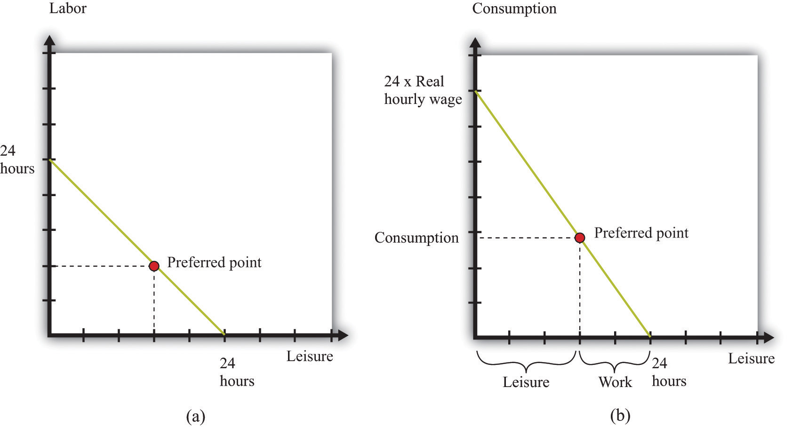(a) The time budget line shows your options for dividing your time between labor and leisure. However, we generally think of labor as a “bad” rather than as a “good.” (b) Now the choice is between consumption and leisure. For each hour of your time, you earn the nominal hourly wage. If you divide this by the price level, you get the real wage. The real wage tells you how many goods and services you can enjoy for one hour of work.
The gain from working, of course, is that you earn income, allowing you to purchase goods and services. Each extra hour of your work allows you to buy more goods and services. Conversely, if you want more leisure time, you must give up some goods and services. Thus the choice between labor and leisure is linked to the choice about how many chocolate bars and other goods you buy. The income we take as given in describing your budget set typically comes from your decision to supply labor time. (Of course, you may have other sources of income as well, such as loans or grants.)
Part (b) of Figure 4.15 "Choosing between Work and Leisure" takes the labor-leisure choice and converts it into a choice between leisure and consumption. Here, consumption refers to all the goods and services you consume. We lump together all the products you consume, just as we lump together all your different forms of leisure (sleep, study, watching television, and so on). As before, time is measured on the horizontal axis: there are 24 hours to the day, which must be split between leisure time and labor time. On the vertical axis, we measure consumption.
To get the budget constraint for this picture, we begin with the time budget constraint:
leisure hours + labor hours = 24.The value of an hour of time in dollars is given by the wages at which you can sell your time. Multiplying the time budget constraint by the wage gives us a budget constraint in dollars:
(leisure hours × wage) + wage income = 24 × wage.Wage income is equal to the number of hours worked times the hourly wage. Because wage income is used to buy goods, we can replace it by total spending on consumption, which is the price level times the quantity of consumption goods purchased:
(leisure hours × wage) + (price level × consumption) = 24 × wage.This is the budget constraint faced by an individual choosing between leisure and consumption. Think of it as follows: The individual first sells all her labor at the going wage, yielding the income on the right-hand side. With this income, she then “buys” back leisure and also buys consumption goods. The price of an hour of leisure represents the wage rate, and the price of a unit of consumption goods represents the price level.
Toolkit: Section 31.3 "The Labor Market"
The real wage is the relative price of labor in terms of consumption goods:
Dividing the time budget constraint by the price level, we get the budget in line in part (b) of Figure 4.15 "Choosing between Work and Leisure".
leisure hours × real wage + consumption = 24 × real wage.As you move along the budget line, you trade hours of leisure for consumption goods. The slope of the budget line is the negative of the real wageThe nominal wage (the wage in dollars) divided by the price level.. If you give up an hour of leisure, you obtain extra consumption equal to the real wage. Put differently, the opportunity cost of an hour of leisure is the amount of consumption you give up by not working. Once we have worked out how much leisure you consume, we have equivalently worked out how much labor you supply:
labor hours = 24 − leisure hours.Part (a) of Figure 4.16 "The Effect of a Real Wage Increase on the Quantity of Labor Supplied" shows what happens when the real wage changes. When the real wage increases, the vertical intercept of the budget line is higher because the vertical intercept tells us how much consumption an individual could obtain if she worked for all 24 hours in the day. The horizontal intercept does not change as the real wage changes: if an individual does not work, then the level of consumption is zero regardless of wages. It follows that the budget line is steeper as the real wage increases. If an individual gives up an hour of leisure time, he or she gets more additional consumption when the real wage is higher. The opportunity cost of leisure in terms of forgone consumption is higher.
Figure 4.16 The Effect of a Real Wage Increase on the Quantity of Labor Supplied
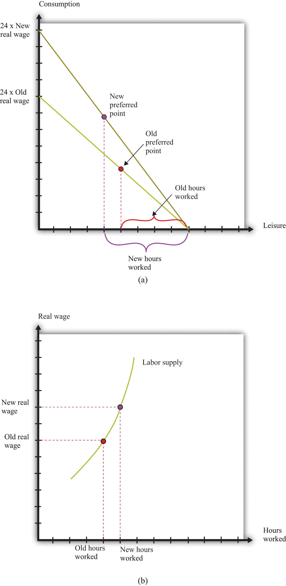(a) An increase in the real wage causes the budget line to rotate. Income and substitution effects are both at work: the income effect encourages more leisure (less work), while the substitution effect encourages more work. The substitution effect generally dominates, so higher real wages lead to more work. This means that the labor supply curve slopes upward, as shown in (b).
Part (b) of Figure 4.16 "The Effect of a Real Wage Increase on the Quantity of Labor Supplied" shows the individual labor supply curveA curve that indicates how many hours of labor an individual supplies at different values of the real wage. that emerges from the labor-leisure choice.
Toolkit: Section 31.3 "The Labor Market"
The individual labor supply curve shows the number of hours that an individual chooses to work at each value of the real wage.
In fact, there are conflicting incentives at work here. As the real wage increases, the opportunity cost of leisure is higher, so you are tempted to work more. But at a higher real wage, you can enjoy the same amount of consumption with fewer hours of work, so this tempts you to work less. This is another example of substitution and income effects. The substitution effect says that when something gets more expensive, we buy less of it. When the real wage increases, leisure is more expensive. The income effect says that as the real wage increases, you can buy more of the things you like, including leisure. We know from our study of demand that, for normal goods, the income and substitution effects act in the same direction. In the case of supply, however, income and substitution effects point in different directions. Consistent with this, most economic studies find that, though the labor supply curve slopes upward, hours worked are not very responsive to changes in the real wage.
Some jobs do not give you any control over the number of hours that you must work. Labor supply then becomes a “unit supply” decision, analogous to the unit demand decisions we considered previously. Should you take a job at all and, if so, what job? To the extent that you can choose among different jobs that offer different hours of work, your decision about whether or not to work will still reflect a trade-off between leisure and consumption.
We have discussed almost everything in this chapter in terms of an individual’s decision making. However, economists often think in terms of households rather than individuals. In part this is because—as we saw with the budget studies—much more economic data are collected for households than for individuals. Also, many of the decisions we have discussed are really made by a household as a whole, rather than by the individual members of that household.
For example, many households have two working adults. Their decisions about how much to work will usually be made jointly on the basis of the real wages they both face. To see some implications of this, consider a two-person household in which both are working. Now suppose that the real wage increases for one person in the household. One person will probably respond by increasing the number of hours worked. However, the other person may choose to work less. Imagine, for example, that there are household chores that either could do. By working less, one person can do more of these chores and thus compensate the other person for the extra hours worked.This is an application of an important economic idea called comparative advantage, which we discuss in more detail in Chapter 6 "eBay and craigslist". Most of the time, though, we do not need to worry about the distinction between the individual and the household, and we often use the terms interchangeably.
Table 4.6 "Allocation of Hours in a Day" shows the allocation of time to certain activities for individuals in three countries: the United States, the United Kingdom, and Mexico. It shows the time allocated on average per day for each of four activities: work, study, personal care, and leisure.
Table 4.6 Allocation of Hours in a Day
| Country | Age | Work | Study | Personal Care | Leisure |
|---|---|---|---|---|---|
| United States | 15–24 | 2.65 | 2.2 | 9.95 | 5.46 |
| United Kingdom | 16–24 | 3.00 | 1.39 | 9.96 | 5.13 |
| Mexico | 20–29 | 4.49 | 0.72 | 10.37 | 3.1 |
For the United States and the United Kingdom, the average number of hours worked is between 2.65 and 3.00. This is an average: some people in this age group may work a full-time job, while others may be students who are not working for pay at all. The sample from Mexico differs from the US and UK samples. First, the group is slightly older. Second, Mexico is notably poorer than the United States and the United Kingdom. For these two reasons, individuals sampled in Mexico are more likely to be working and less likely to be studying and enjoying leisure—which is indeed what we see.
So far we have looked at the allocation of your income separately from the allocation of your time. Yet these choices are linked. The allocation of your time influences the income you have to spend on goods and services. So a change in the wages you are paid will affect how you allocate your time and the goods and services you choose to buy.
In a similar fashion, the prices of goods and services you purchase will have an influence on your allocation of time. For example, if the price of a computer you want to buy decreases, you may respond by working a little more to earn extra income to purchase the computer. The reduction in the price of the computer raises your real wage, so you respond by working more.
If the real wage changes, there are changes in both consumption decisions and work choices. Figure 4.16 "The Effect of a Real Wage Increase on the Quantity of Labor Supplied" shows that an increase in the real wage means you can obtain more consumption for a given amount of work time. Further, as in Figure 4.6 "An Increase in Income", the budget set expands as income increases. Because an increase in the real wage will lead to an increase in hours worked (see Figure 4.16 "The Effect of a Real Wage Increase on the Quantity of Labor Supplied"), labor income will increase. So we can interpret the shift in the budget line in Figure 4.6 "An Increase in Income" as coming from this increase in labor income.
When income increases, you will generally consume more of all goods and services. An increase in the real wage leads to an outward shift in your demand curves for chocolate bars, downloads, and all other normal goods. Combining these figures, we can make the following predictions about the effects of an increase in the real wage:
The last item in the list draws on Figure 4.6 "An Increase in Income" but is less direct than the other implications. As the real wage—and thus your income—increases, the set of bundles you can afford is larger. Moreover, every bundle you could afford when you had less income is still affordable now that you have more income. Thus we conclude that you will be happier. After all, you can always purchase the bundle you bought with lower income and still have some extra income to spend.
Suppose the price of a chocolate bar increases. We saw from Figure 4.8 "A Decrease in the Price of a Chocolate Bar" that when this price increases, the budget set shrinks. We also saw from Figure 4.9 "The Demand Curve" that the demand for chocolate bars decreases when the price of a chocolate bar increases. But there are also implications for labor supply. Remember that the real wage is the nominal wage dividing by a price index representing a household’s cost of purchasing a bundle of goods and services. So when the price of a chocolate bar increases, the cost of purchasing the bundle will increase and the real wage will decrease. From Figure 4.16 "The Effect of a Real Wage Increase on the Quantity of Labor Supplied", labor supply will decrease as the real wage decreases. This is a movement along the labor supply curve.
We all make economic decisions every day, often without giving them very much thought. In this chapter, we highlighted two fundamental decisions: allocating income and allocating time. You (and everyone else) generally make choices over income and time allocations in a manner that makes you happy. Thus we predict that you will not throw income away. Further, whatever combinations of goods and services and time allocations you choose, economic theory presumes that these are the best ones available to you. Remember also that even though it is usually easier to focus on one decision at a time, your spending and time allocation decisions are interconnected. Changes in the prices of goods and services affect how you spend your time, and changes in the real wage affect your consumption choices.Chapter 8 "Why Do Prices Change?" has more to say on the connections among different markets in the economy.
Economics is often defined as the study of how we allocate scarce resources that have alternative uses. In this chapter, we saw this idea at work at the individual level. Your income is a scarce resource; you don’t have enough income to buy everything that you would like. Your income has alternative uses because there are lots of things you might want to buy.
Perhaps the most fundamental idea of this chapter is that of opportunity cost. Given that you have limited income to allocate across goods and services, the opportunity cost of consuming one good or service is the amount of another good or service you give up. Given that you have limited time to allocate across activities, the opportunity cost of spending time on one activity is the value of the time you could have spent on another. The budget and time budget constraints are graphical representations of this central economic principle. And the interaction between these budget constraints and people’s wants and desires is at the heart of the economic analysis of decision making.
Which statements are prescriptive? Which statements are descriptive?
(Advanced) Look at Table 4.7 "Preferences over Downloads and Chocolate Bars". The top part of the table lists four different bundles of downloads and chocolate bars. The bottom part of the table shows which bundle is preferred when we compare any two bundles. Look at bundle 1. The top part of the table tells us it contains 0 downloads and 20 chocolate bars. The first row of the bottom part of the table shows how this bundle compares to the other bundles. So this individual prefers bundle 1 to bundle 2 but also prefers both bundle 3 and bundle 4 to bundle 1. Do these preferences satisfy “more is better”? Are they consistent or can you find some contradictions?
Table 4.7 Preferences over Downloads and Chocolate Bars
| Bundle | Downloads Consumption | Chocolate Bar Consumption | ||
|---|---|---|---|---|
| 1 | 0 | 20 | ||
| 2 | 100 | 0 | ||
| 3 | 50 | 10 | ||
| 4 | 110 | 30 | ||
| Bundle | Which Bundle Is Preferred When Comparing Bundles? | |||
| Bundle 1 | Bundle 2 | Bundle 3 | Bundle 4 | |
| 1 | — | 1 | 3 | 4 |
| 2 | 1 | — | 2 | 4 |
| 3 | 3 | 2 | — | 3 |
| 4 | 4 | 4 | 3 | — |
Economics Detective
Spreadsheet Exercise